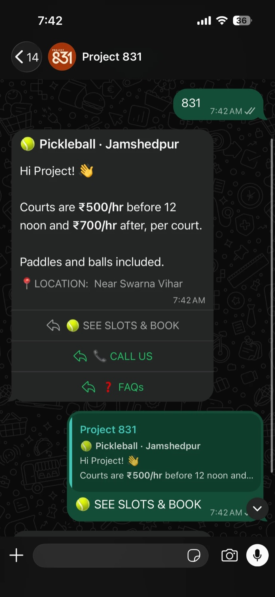
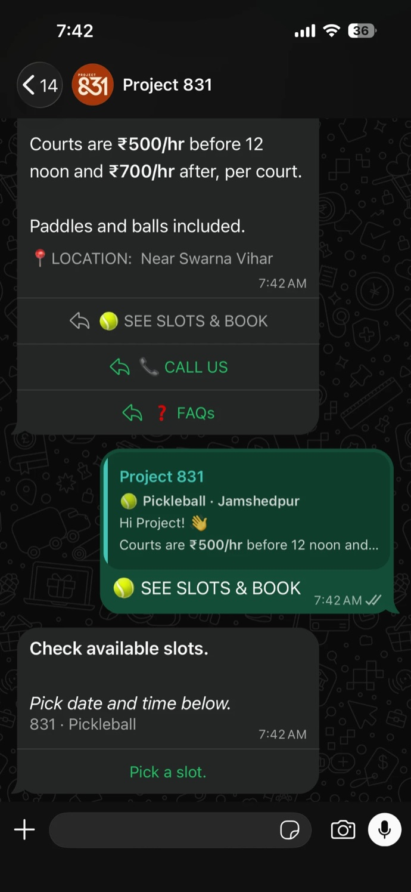
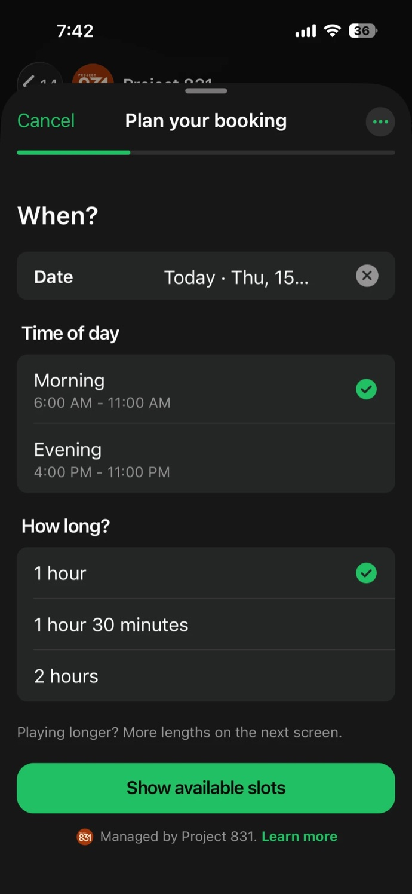
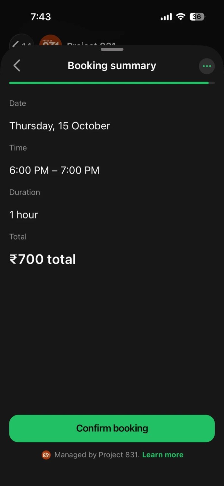
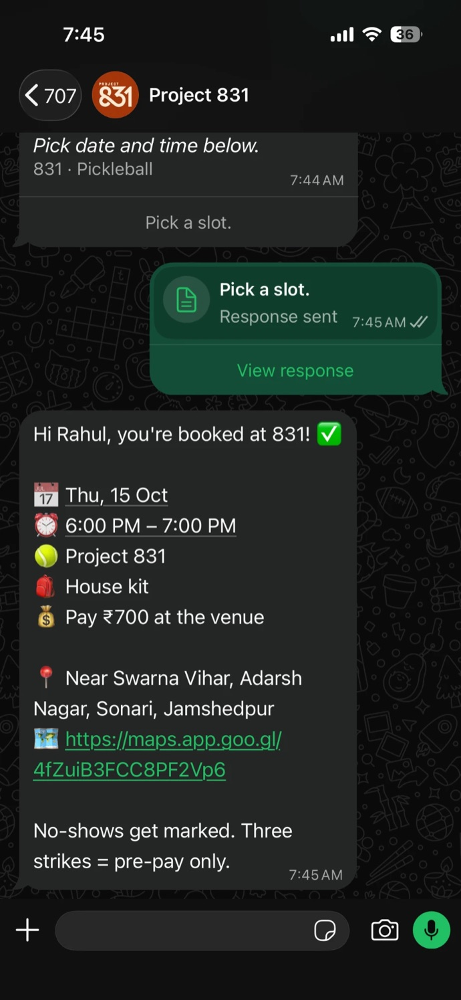
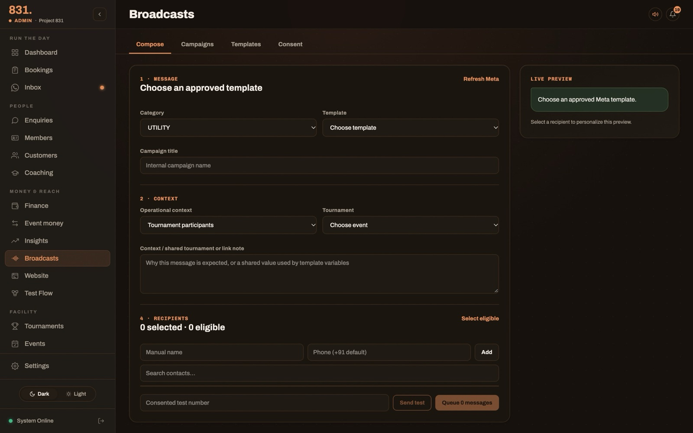
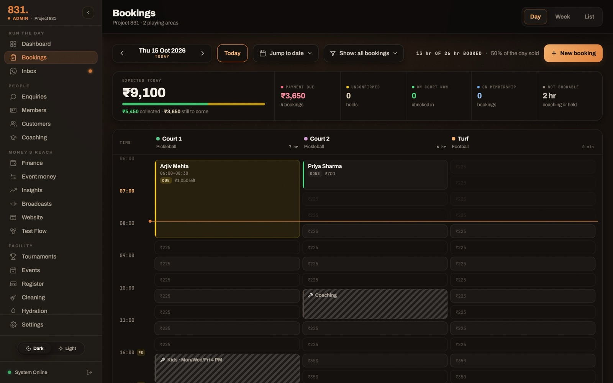
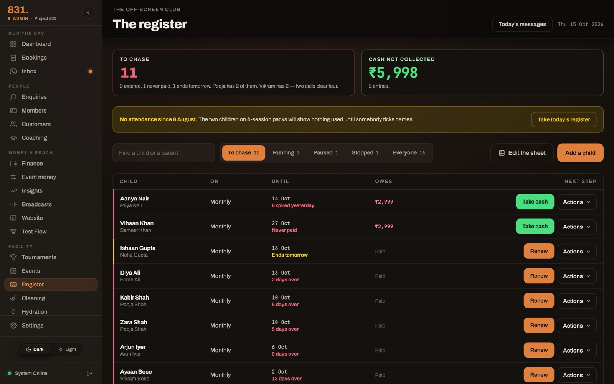
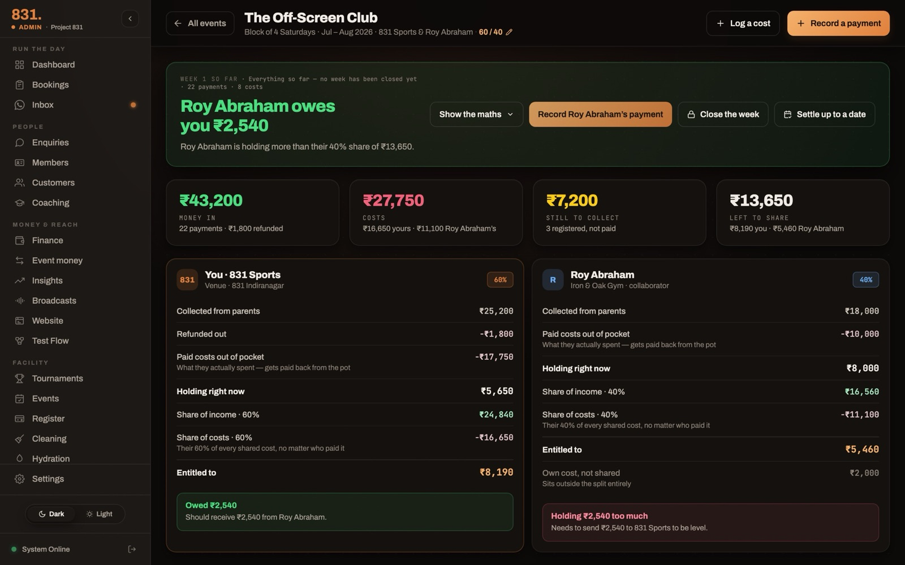

Side project · Jamshedpur, India · March – October 2026
A venue that books itself inside WhatsApp.
Project 831 is a two-court pickleball venue. On the side, I designed and built the system it runs on: booking inside WhatsApp, a desk dashboard, and a kids' programme that handles its own renewals and splits its money with the coach.
Booking · real screenshots, 15 October
Six taps from “831” to a confirmed court.
No app, no website, no login. A customer types the venue's name into WhatsApp and books a court without leaving the chat.






Each version of the flow asks for less.
v4 let you pick several slots. v5 added a kit screen. v6 asks one “When?” question, moves duration to the slot screen and shows no price copy until the summary.
Meta integration · WhatsApp Cloud API + Flows
WhatsApp is the front door, so I built it like one.
The bot, the booking Flow, the confirmations and the marketing all run on Meta's WhatsApp Cloud API, wired straight to the booking engine.
Chat, buttons, a 3-screen Flow, in-chat pay.
Cloud API
Signed webhooks in; templates and messages out.
Webhook + Flow endpoint
Encrypted data exchange returns live slots and prices per screen.
Postgres
Bookings, money, flow events. Row-level security on every table.
An encrypted form inside chat
RSA-OAEP + AES-GCM on every screen. The first screen ships with its data, so it opens with no server round trip.
A Flow builder in the dashboard
Draft, preview, publish and promote Flows through the Graph API without opening Meta's tools.
Confirmations that always land
Approved templates by default, a 30-minute safety margin on the window, and a retry when Meta refuses.
Marketing can't break login
Promotions go out on a second number, so a block or report never touches the number that sends login codes.
Every abandoned booking is visible
Seven stages are logged per person; the desk can nudge a drop-off with one tap, inside the window only.
Utility and marketing kept apart
Opt-ins stored with evidence, a Stop promotions button on every campaign, and sends paused when Meta rate-limits.

Payments · Razorpay, inside WhatsApp and on the web
The data said: take the money first.
Booking was free, so skipping it was free too. Bookings with nothing paid kept getting cancelled, and some people just didn't turn up. So the engine learned to ask for money before it holds a court.
What each finding turned into
Flow confirms
The engine decides: pay in full, part pay, or pay at the venue.
Court held 15 min
A pending row blocks the slot in Postgres; nobody else can take it.
Review and pay card
Meta's checkout, Razorpay underneath. UPI or card without leaving the chat.
Checked twice
Meta's payment status, re-checked with Razorpay: captured, INR, same amount. Then the booking confirms.
One payment layer, every product
Courts, tournaments, events, Off-Screen Club memberships and enquiries all pay through the same Razorpay orders and links.
The venue sets the rules
Deposit percentage, which days need prepayment, and per-customer flags: pay first, or trusted to pay at the venue.
Reference before request
The order reference is stamped on the booking before the card is sent. If a send fails silently, the hold stays and no second link goes out.
Signed, then believed
HMAC-SHA256 on the raw body with each venue's own secret. Replays are ignored; late money is flagged to the desk, never lost.
Keys the dashboard can't read
Each venue's Razorpay keys are encrypted with AES-256-GCM and a rotating keyring. The dashboard can write them, never show them.
HDFC behind a switch
Web checkout can route to HDFC SmartGateway per venue. Built and tested with a ₹1 harness; waiting for launch.
Prepaid bookings have never been a no-show.
The desk · bookings dashboard
The desk stopped being the way in.
Self-serve bookings went from 15% to 74% of the month in four months. The desk now reads the day instead of typing it.

Off-Screen Club Juniors · kids' fitness, run with a coach
A weekly programme that runs, renews and splits itself.
Saturday and Sunday batches for children, run with an outside coach. Parents sign up on the website or at the desk; the system handles the month after that.
Who keeps what
Split after shared costs. Both sides open the same accounts page, every line needs the other side's tick, and a settled week is frozen by the database.
Three plans, one register
₹2,999 for every session in the month, ₹1,999 for any four, ₹599 for one. Memberships stay on the register until someone stops them, and attendance is the record of what was used.

Renewals chase themselves
Planned every morning at 7, sent between 9 AM and 8 PM, at most two a week per family, cancelled the moment the family pays. Each sequence can run off, for review, or automatically.

One grant opens the programme
The coach gets a collaborator role that starts with zero access. A grant on the programme opens every plan and batch inside it.
Given per person, per programme
The coach's team takes cash at the venue and records it. Prices, refunds and deletes stay with the venue.
Attendance from a link and a PIN
A signed WhatsApp link opens one programme's register for 60 days, never shows parents' numbers, and dies when the key rotates.
The coach works in chat
Enrolments and payments come in through a desk Flow and pass the same rules as the dashboard.
APIs · 12 serverless functions, 6 outside services
One engine, many doors.
WhatsApp, the website, the dashboard and the voice agent all call the same booking API. No business rule exists twice.
| Endpoint | Serves | Detail that matters |
|---|---|---|
| /api/webhook | Every WhatsApp message, status and payment | Signature checked on the raw body; duplicates claimed once |
| /api/flow | The booking Flow's screens | End-to-end encrypted; slots and prices from the live engine |
| /api/bookings | Dashboard and website bookings | Public reads and creates rate-limited per visitor |
| /api/events | Programmes, registrations, attendance, collaborators | The coach's WhatsApp entries call it in-process with his identity |
| /api/razorpay | Payment webhooks for Razorpay and HDFC | Never trusts a callback; re-reads the payment first |
| /api/admin-data | The dashboard: money, staff, messages, settlements | About 36 resources behind role and grant checks |
| /api/cron | Reminders, follow-ups, briefings, renewals | Six schedules across every venue on the platform |
| /api/v1 | The voice agent | Per-venue keys, rate limits, idempotent bookings |
Messages, templates, Flows, payments
API version pinned in code, with an alarm 90 days before Meta retires it.
Three payment rails, one settlement
Checkout, payment links and in-chat WhatsApp Pay all finish in the same code.
Built to host more than one venue
Each venue's keys are encrypted at rest with a rotating keyring; webhooks resolve the venue from the URL and the number.
Also: Postgres with deny-all row-level security, web push for the desk, Vercel cron. Tests run behind a network guard, so no test can reach a real service.
Voice agents · two attempts, both parked
We tried to answer the phone with an agent. Twice.
Plenty of customers still prefer to call, so we built a voice agent that could book. It worked; it wasn't worth keeping. What lasted is the API it forced us to build.
Our own agent on WhatsApp calling
- Meta WhatsApp calling → a Node server in Mumbai
- Sarvam AI for speech, model and voice; English, Hindi and Hinglish
- Could check slots, book, cancel and reschedule
- Interruptions handled; worst-case reply cut from 10 s to 3 s
28 calls and 12 test bookings in 72 hours. Then a review found it fragile: booking logic copied outside the app, calls held in memory, a reschedule that could lose a booking.
A voice platform, our API in charge
- Dograh as the voice layer; the app keeps every booking rule
- Narrow tool API: venue info, dates, slots, the caller's bookings, book, cancel
- Idempotency keys, confirmation sent once, caller sees only their own bookings
- 152 example conversations prepared for tuning tone
Booked end to end in testing, never with a real customer. The WhatsApp-to-phone route was never proven; voice was switched off in October.
The lesson: buy the voice, own the booking rules.
Rebuilt on coss ui · open source, runs in the browser
The same product, on Cal.com's own components.
The booking page, part payments, the 15-minute hold and the desk, rebuilt end to end with all 55 coss ui components, installed with the shadcn CLI and unmodified. Demo data only.
github.com/rkj-builds/slot-picker
React 19, TypeScript, Base UI, Tailwind v4. 152 tests with accessibility checks.
⌘K on the desk
Plus the Scenarios button on the booking page: weekend part-pay, pay-first, failed payment, slot taken mid-checkout.
How it was built · 28 March – 14 October 2026
Designed and built by me, with Claude Code.
68% of commits co-authored with Claude Code. I specify and review; the machine types.
React 19, Vite PWA, Postgres
12 serverless functions on Vercel, a separate Next.js marketing site, no component library.
Production data is never test data
2,700+ tests run offline; a mock mode answers every API call in the browser; a PII scanner blocks real phone numbers in the repo.